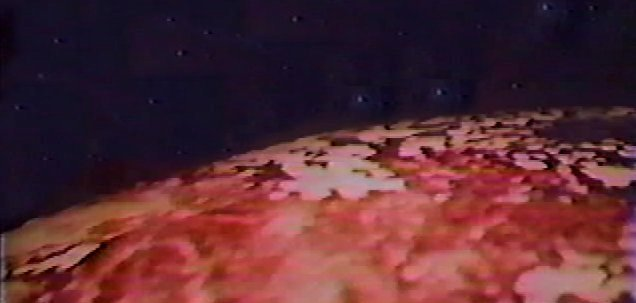

GALLIFREY
They That Walk in Shadows

TABLE OF CONTENTS

Click on paragraphs to see color coding for sources
ASTROPHYSICAL LOCATION
War Time: The Nine Homeworlds Project
Ninty-five years before the beginning of the Time War the High Council approves House Lineacrux's Nine Homeworld Project. The Lineacrux cousins quietly arranged for the crypto-forming of eight new Gallifrey “Clones” out of existing Gallifreyan Colonies. The Project involves placing 8 planets into Inner Time and anchoring them to the Web of Time. At least one of the planets that were crypto-formed was inhabited by humans. Each of these cloneworlds was primed with the Laws of Time. The "clones" are to be used as bolt-holes, decoys, and alternative homeworlds because the original is less secure. This brings the total number of possible Gallifreys to nine.
Much of the following numbering is speculative, but this is a key to the various Gallifreys. For example, to differentiate the events on Romana's Gallifrey III, and the Master's Gallifrey VIII this timeline will (from this point onwards) refer to Romana's planet as "Gallifrey III" and the Master's planet as "the Homeworld." While there is no hard data, most Gallifreyans feel that the original Gallifrey fell during the first half of the Time War.
- Gallifrey I - The 'original' Gallifrey destroyed in the Battle of Mutter's Cluster at the beginning of Time War. (see The Infinity Doctors, The Apocalypse Element, the Gallifrey audios, and The Ancestor Cell)
- Gallifrey II - The Gallifrey where Flavia had a long and successful reign (see The Eight Doctors)
- Gallifrey III - The Gallifrey seen in the Big Finish 8th Doctor Adventures Audios (see Sisterhood of the Flame)
- Gallifrey IV - The Gallifrey devastated by the High Council to keep Varnax from seizing control of it. (see Last of the Time Lords)
- Gallifrey V - The Gallifrey destroyed by the Cybermen (see Real Time)
- Gallifrey VI - The One True Gallifrey which Rassilon later rules over (see The End of Time and Day of the Doctor)
- Gallifrey VII - The Gallifrey where the Doctor prevents the Elysian Faction from changing history (see The Final Chapter)
- Gallifrey VIII - The Gallifrey where the Master became War King (see The Book of the War and the Faction Paradox Audios)
- Gallifrey IX - The Gallifrey where the Celestial Preservation Agency (CPA) hire the actor Daland to play the Doctor in a museum (see Omega)
By presidential decree the cloneworld colonies are kept completely out of contact with each other and with the original Gallifrey Officially this was done to ensure that Time Lord society survived the War. However the project was shrouded in secrecy and it is rumored that the original Gallifrey might have been shifted to a new location leaving a cloneworld as a decoy in its place. Such a move could have had a large (but unknown) effect on the History of the Spiral Politic. Officially each cloneworld is occupied by caretaker-Houses but since communication and travel between them is forbidden each one believes itself to be the original Gallifrey and each has it's own Lord or Lady President. Each of the Clone Worlds think the other Gallifreys are merely Dominions of their Gallifrey.
The original Gallifrey was probably still located , near the center of the galaxy but by the year 2000 AD Gallirey could be found 250,000,000 light-years away from the Earth in another galaxy. . One of the cloneworlds was put in the original's location, 29,000 light-years from Sol. One Gallifrey could be seen with the Griffith Observatory's Telescope on 21st century Earth. Still other sources reported the Kasterborous constellation being located billions of light-years from the Earth, at the very edge of time and space.
About a decade after the Time War begins the Time Lord Braxiatel begins using the energy from KS-159 to prepare the planet Maximediras as a possible new Gallifrey. A century into the war, even more Gallifreys have been created secretly and placed in Pocket Universes as a last resort. This brings the total created to 12. It would appear that all but one of these Gallifreys was destroyed by the end of the Time War.
End of Time: Gallifrey Falls No More
After escaping from a pocket dimension the surving Time Lords hide the final Gallifrey at the end of the Universe for its own protection. The Gallifrey is not a recent re-creation but one that fought in the Time War. Its possible that this homeworld is located at the same spatial co-ordinates as the original.
THE RASSILON ERA
War Time: The Nine Homeworlds Project
Ninty-five years before the beginning of the Time War, House Lineacrux quietly arranged for the crypto-forming of eight new Gallifrey “Clones” out of existing Gallifreyan Colonies. The
Project involves placing 8 planets into Inner Time and anchoring them
to the Web of Time. Each of these cloneworlds was primed with the Laws
of Time.
The "clones" are to be used as bolt-holes, decoys,
and alternative homeworlds because the original is less secure.
This brings the total number of possible Gallifreys to nine.
As part of the defense mechanisms these other Gallifreys appear not be connected with the Protocols of Linearity (aka
the 3rd Law of Time). Indeed it is possible that a new Law of Time was passed to prevent each Gallifrey's causal nexus
from interacting directly with the others. This would mean that any enemy who engaged one of the cloneworlds who then
be trapped by the Protocols of Linearity making it very difficult for them to mount an attack on any other Gallifrey
(or their agents). Any Time Lord who survived their Gallifrey's destruction would only be able to visit worlds which
either had no connection with the War or worlds where it was believed that Gallifrey had fallen. Effectively they would
be stranded in the Post Time War era. This is exactly what we see in the 8th Doctor after The Ancestor Cell. Though
the 8th Doctor was able to get back into the Pre-Time War era, both after the events of Taking of Planet 5 and again
after the events of The Ancestor Cell, so we know it is possible.
These Gallifreys were also scattered through time. Given that these clone worlds are in different locations in space and time there is insufficient data to convert Time Lords dates to Gallifreyan Relative Time in Earth's BC/AD calendar. Some the starting points (ie when they were created and the Doctor was 1056 years old) appear to be as follows...
- The Gallifrrey left at the original co-ordinates, was at 2059 AD at the time of the 9 Homeworlds Project.
- One Gallifrey could be seen with the Griffith Observatory's Telescope on 21st century Earth. The image depicts Gallifrey before the War started.
- Rassilon's One True Gallifrey is placed around ~9,000,000 AD
- Gallifrey VII was placed between 48,000 BC and 0 AD (Brax believes this Gallifrey is not the original)
- One Gallifrey might might have been placed in 3172 AD
- One Gallifrey might have been placed in 30,796 AD
- One Gallifrey is located at the very edge of time and space.
End of Time: Gallifrey Falls No More
After escaping from a pocket dimension, the surviving Time Lords hide the final Gallifrey at the end of the history of the Universe for its own protection. This location might have been chosen to assist the Time Lord in reaching the next Universe without the necessity of the Final Sanction.
The center most star is Gallifrey's sun.
(This constellation is seen on the back of the 3rd/4th/8th Doctor's TARDIS key)
HOME CONSTELLATION
Gallifrey's Dominions include several planets that would be valuable if mined (Could they contain Taranium?). Trakkiney is a hot dry dusty world that was one of the Time Lord’s first off-world colonies (after the collapse of the Gallifreyan Empire). Time Lord Way-Stations are located at various points in space and generally have several Time Lords assigned to them. The center of most of the galaxy’s trade routes pass relatively near Gallifrey. This is where most of the more powerful civilizations in the cosmos can be found. Time Lord traffic control monitor any vessels that pass near Gallifrey's space-time location. Space vessel must request permission to pass through Gallifrey's space-time. The Sisterhood of Karn draws a significant number of space vessels (probably to steal the Elixir), causing them to crash on Karn. Traffic Control's temporal scans will detect an unscheduled Timeship about 2 minutes before it materializes and identify whether it is Gallifreyan from its molecular patina.
THE KASTERBOROUS SYSTEM
In order to protect Gallifrey from Vampires, the solar engineer, Omega, constructed a new Second Sun, which he added to Gallifrey's system. This Second Sun is named Pogar and its Minyan designation is Gamma Kasterborous B. Pogar is a main sequence class M star. However, because of its artificial origin, Gallifrey is often described as having only one sun. On Gallifrey the second sun of Pogar can be seen to rise in the south. In order for Gallifrey’s 2nd Sun to rise in the south Gallifrey can’t be orbiting it (or perhaps Gallifrey’s magnetic poles are at right angles to its rotational axis). These twin suns that Gallifrey orbits give the planet very short nights.
Tersurus
Old Time: Tersurrans
Tersurrans have huge, jutting, foreheads and scrunched up tiny faces. They are covered in white hair and have short, but powerful, arms. Tersurrans can sense the health of the people they touch. They prefer hot weather and cold weather tends to make them ill. They were considered to be one of the nicest species in the cosmos. During the Gallifreyan Empire they were used as slaves of the Shoboans.
The planet Tersurus is known as one of the Outer Planets by the Gallifreyans. It has at least one moon. The planet has singing stones and numerous clone banks. Due to an attack by the Fendahl Predator, the people of Tersurus have lost all but the most tenuous forms of communications. From that point forward they could communicate only by carefully controlled breaking of wind. The species was wiped out after they discovered fire. Now the Time Lords have surrounded the planet Tersurus with temporal defenses. On that world is a time-shielded vault filled with the technology of the Dimensioneers. Raston Robots are built on the moon of Tersurus Luna by the Raston Hardware Company. They are marketed as being ancient technology by the inhabitants. But the design isn't really that old and the company is still in operation in the 21st century AD. Tersurus was destroyed by the Sontarans with a cyber-earthshock bomb in 6211 AD/GRT.
Karn
Old Time: The Masters of Karn
In ancient times the world might have been known as Winter. When the galactic empire is at its height, the metal walled Citadel of Karn is the scientific and technological center of the Gallifreyan Empire. The Citadel was powered by Karn’s sun and was administered by a massive computer. This computer was charged with repairing and protecting the secrets of the Empire. The brilliant engineers, artificers, and scientists who work there held titles of King and Queens, and were known as the Masters of Karn. The Masters were ruled by the Grand Master of Karn. If it was the will of the majority, the Grand Master of Karn could be dethroned. They construct many fantastic weapons and other machines. While the Masters of Karn were arrogant and over-confident, they weren't actually evil. The people of this world will live in peace and prosperity for thousands of years.
During the Time of Stones, the Master of Karn known as Drextor had Slendor, design and build a massive 'Ultimate Weapon.' This weapon could change the nature of cosmic rays throughout the Universe so that they would drain energy from animal tissue and use it to make the air itself burn. The Weapon could be configured so that specified species are immune. Selendor also mined a powerful ore from beneath the surface of Gallifrey (probably Taranium) to create the Crystal of All-Power. The Crystal of All-Power was required to as a catalyst to boost the power of the Ultimate Weapon. When Drextor was crowned King he announced the completion of the Weapon. But it was not long after this that Drextor's own wife poisoned him to prevent the weapon's use.
The civil war on Karn leads to the use of
Slendor's Ultimate Weapon as the Empire collapsed.
The world is devastated and most of the Masters of Karn are killed. Some
of the
Gallifreyan colonists survive but give up on science and live simple lives far from the remains of the cities. After the fall of civilization on Karn the Giant Land Crab evolved.
The remaining Grand Master of Karn decided that the Crystal of All-Power was be split up into
the Seven crystal
Keys to Doomsday. Once for each of the crimes of the people of
Gallifrey: Price, Injustice, Power, Exile, Knowledge, Wisdom, and
Nevermore. Each key hidden in one of the Karn's 7 provinces. According
to a fairy-tale, Swowana later persuaded Slendor to give her the 7th
Key of Nevermore. She used the Key to make an impenetrable forcefield
box. She trapped herself and the key inside the box to save
Gallifrey.
During the Time of Stones, the followers of the Pythia Heresy go to Karn and found the Sisterhood of the Flame. Given that the sisterhood has only been around for centuries a long time past the 20th century, it is possible that the Sisterhood used a time scaphe to travel into the future. If so, the probably went to a point after Gallifrey had been devastated by the Time War. Once on Karn, they discover the Elixir of Life that is produced by the Great Flame of Life. The Elixir is produced by rare volcanic numismaton gases and the even rarer chemicals in the rocks. It can heal almost any damage, keep a person alive forever and allows a Gallifreyan precise control over their regenerations. Gallifreyans who drink it are rendered fertile again. After consuming the Elixir for long periods, it becomes impossible to die from a lack of food or water. It tastes like a cross between apricots and custard. They set up the Sisterhood of the Flame of Life, a cult that worships the Great Flame. Their mental powers are dependent on their proximity to the Flame. Reverend Great Mother Maren is already quite old when the Elixir is discovered. Given the emphasis on motherhood and fertility it is possible that the Sisterhood is immune to the Curse and capable of breeding. If this is so then Patience might have been a member of the Sisterhood. The rituals of the Pythia survive in the form the Sisterhood of the Flame though they the use the title Great Mother instead of Pythia. The Great Mother controls Sisterhood. Under the Great Mother of the Sisterhood is High Priest Cassandra of the House of Jadedreamers. Lady Peinforte will be a member of the Sisterhood. By the end of Brain of Morbius there will only be 70 members of the Sisterhood of Karn. The Visionaries are seers from the Sisterhood of Karn. The Sisterhood will eventually surpass some areas of Time Lord science, most notably in the fields of biogenetics. Using the Elixir they can prepare potions that will tailor a Gallifreyan’s regeneration to enhance whatever trait is desired (including gender changes). Before the end of the Time of the Stones Rassilon signs the Pact (or Treaty) of Rassilon with the Reverend Mother of the Sisterhood of Karn. The Treaty states that the Time Lords will provide protection to the Sisterhood for as long as they share the Elixir of Life with Time Lords need it during certain rare cases of regenerative trauma. The Sisterhood has a secret portal that connects back to the Capitol on Gallifrey. The Sisterhood of the Sacred Flame is said to be tied to the Time Lords until the End of Time.
After his Renegade Presidency, Morbius and his army try to capture the world in the Battle of Karn, but they are defeated by the Alliance of the Sisterhood of the Flame and the Time Lords. The Battle of Karn devastates the civilization and planet of Karn and most of the people living there move away. Morbius becomes the first Time Lord to be executed by his own people. But Solon saved Morbius' brain from disintegration. The Sisterhood of the Flame begin crashing any ships that attempt to land on Karn. Its possible that the planet had a much more plentiful ecosystem before the final battle of Morbius’ war. The planet Sarn might later become known as Karn in the future.
THE WORLD OF GALLIFREY

Most of Gallifrey is covered in burnt red rocky deserts (with orange and red sand) and near endless mountain ranges. Brown, purple and gold are other common rock colors. The water of Gallifrey's streams often tastes slightly sweet, but many of the river beds are dry. There are some green forests, and golden fields strewn with rubble - but they make up a minority of the terrain.
The valley between those mountains was known as the marshlands in the Old Time and had explosive swamp gas. But the ice age has given it the moniker of the Drylands by the outlanders who live there. The Untempered Schism is found just outside the south-west edge of the Capitol. Another schism, the Crevasse of Memories That Will Be, is located outside the Capitol. During the Dark Times the Capitol often suffers from a bitter wind from the Northern Lakes located at least 200 miles north of the Capitol (if not more).
The Capitol isn't too far from the red grass covered hillsides of Mount Perdition. The Master's Chapterhouse of Oakdown can be found on its slopes. Perdition is probably less then a two day's walk from Mount Solace (so less then 20 miles) and is part of the same mountain range. This range stretches over a thousand miles to the south-west from the Capitol and probably encompasses Mount Cadon. The areas around Mount Perdition were once filled with fruit and wild game. The Sea of Life lies near the base of Mount Perdition. Its shore is made up of orange sand. The water of the Sea of Life is silver (or maybe just often appears silver). There are caves in the mountain, and legend says that it was here that Death first came to Gallifrey. Legend also says that a being known as the Stranger reshaped a tributary of time that flowed down the mountain into the River of Time and the Sea of Life.
A massive canyon can be found about 800 miles to the north-east of the Capitol. The Fettarian pass offers a way through the mountain range and allows access to the west coast of Wild Endeavor. A train route leads from the Capitol through this pass. The Soonwell Valley is located in the pasture belt valleys about 500 leagues (~2000 miles) from the Capitol. The Camation Desert is located thousands of miles from the Capitol.Southern Gallifrey is considered quite wild and beautiful, appears to be regarded as something of a vacation area. If Gallifrey's habitable continents are mostly located in the northern hemisphere then the 'Southern Gallifrey' could refer to territories are around the warmer equator. Southern Gallifrey filled with arid planes which often experiences warm nights where the stars shine brilliantly. There are occasionally blizzards.
The mountains of Southern Gallifrey are located thousands of miles from the Capitol, and are know to be inhabited with stray cats and hermits. There is a large desert near these mountains (possibly the Camation Desert?). The Gin-Seng Sector covers some of the southern mountain near House Ixion (the southernmost chapterhouse). The feral so-called Killer Cats lived in the Gin-Seng Sector. These precognitive cat people despised the traditions of the Time Lords, and had their own mercenaries and oracles.
Gold has no special value on Gallifrey (indicating it is quite common?) The planet also has a significant amount of Gallifreyan Zinc which is one of the strongest metals in the universe. Madranite is fairly common as well. The area of Gallifrey known as Mansippia once had massive amounts of Zeiton ore. This Zeiton ore probably significantly accelerated evolution on the world by re-shaping the inhabitants morphic fields. The Arcadian Sector of Gallifrey is the only place in the cosmos where one can find white-point star diamonds. These Arcadian Diamonds the most expensive substance in the Galaxy. White Star diamonds are one of the strongest stones in the cosmos and can even survive inside the vortex or entering a time lock. They have a complex cellular structure that allows them to be programmed like a circuit board to resonate with a specific person's biodata. Once inside the Vortex a properly programed diamond will be drawn towards its target. Since they can be tracked through time and space, they can be used as a beacon to pull things out of even the strongest of time locks.
FLORA OF GALLIFREY
* There are Kaden-Wood Trees (with silver leaves), and Ulanda Trees (silver leaved with tasty fruit, this might be the Gallifreyan tree that grow sweet yellow fruits), Maldor Trees, Cerub Trees (with hallucinogenic truffle-flavored nuts), Magentas (fruit tree), and Oaks.
* There are Trumpberries, Lushberries (probably edible), Molten Rushes (with zinc hawthorns), and Grass (both in deep red and probably purple). Biotrophic fungi include Feathergills, pogsquats, skullcaps, and Cardinal's collars.
FAUNA OF GALLIFREY
THE KILLER C.A.T.S OF GIN-SENG (Calculating Animals with a Tails)
The ancestors of the Killer Cats were the Felinetta cat-people. They are born in litters, and the females were much smarter then that males. The Cat-People had very good night vision and sense of smell, but they hate water. Some are shapeshifters. The space-time jumping telepathic Kitlings were another race bred from the Felinetta by the Cheetah-people of the Cheetah Planet.
A CAT's instinctive precognitive powers allow it to sense what is possible and what is impossible. The CATs could thus prevent inventors and theorists from wasting their time for foolish projects. They also had surprisingly stable biodata. At the time, the creation of the CAT people was the Gallifreyan Empire's greatest achievement. In ancient times, it was to be traditional for every Lord President to have a CAT as an advisor. Cats became revered on Gallifrey as the symbol of intelligence.
But, shortly after the Intuitive Revolution, the Warpsmiths of Phaidon, sent the Death (or Killer) Cats to wipe out the Time Lords. It was only thanks to Rassilon's creation of the Special Executive that the people of Gallifrey were spared.
In modern times, the feral, precognitive, so-called, 'Killer Cats' live in the Gin-Seng Sector of Southern Gallifrey. This Sector covers some of the southern mountains near the House of Ixion (the southernmost chapterhouse). The Killer Cats have a highly refined culture which includes mercenaries and oracles. Their entertainment includes lethal gladiatorial contests. These cat-people despise the traditions of the Time Lords. Most departed Gallifrey during the Morbius presidency because they had forseen the coming Time War.
End Time: The Death Particle
After
the Time Lords had removed Gallifrey from the pocket dimension, the
Master hacked the Matrix. He stumbles on the secret of the
Timeless Child and, enraged, he burned the Citadel and killed all the Gallifreyans. Not
long after that the Master began turning the corpses into CyberMasters.
The human Ko Sharmus triggers the Death Particle to destroy this new
cyber-race. It kills every organic cellular life-form on the planet
Gallifrey.